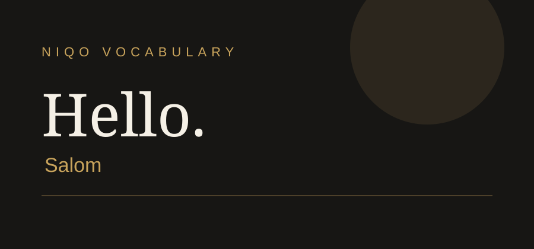
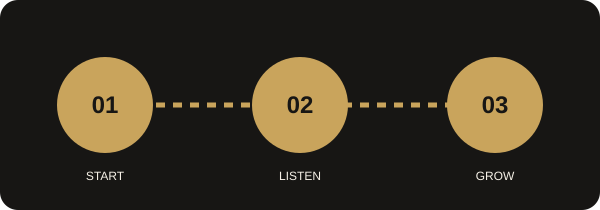

Gamifikatsiya
Mashqlarni bajaring, XP ball to'plang va yangi darajalarga chiqing.
YOUR LANGUAGE. YOUR UNIVERSE.
NIQO bilan til o'rganish oddiy dars emas. Har bir mashq — yangi bosqich, har bir so'z — yangi imkoniyat.
Bugun 10 ta yangi so'z. Ertaga — yanada katta imkoniyat.
WHY NIQO
Bilim, o'yin va shaxsiy rivojlanish bir platformada.
Mashqlarni bajaring, XP ball to'plang va yangi darajalarga chiqing.
So'zlarni tinglang va to'g'ri talaffuzni mashq qiling.
O'rganilgan so'zlar va kunlik faollikni kuzatib boring.
YOUR JOURNEY
Ingliz tilidagi boshlang'ich maqsadingizni belgilang.
Yangi so'z, tarjima va audio talaffuz bilan tanishing.
Qisqa mashqlar orqali bilimni mustahkamlang.
YOUR PROGRESS
Quyidagi jadval NIQO platformasidagi progress ko'rinishini namoyish etadi.
| Kun | Yangi so'zlar | XP ball | Holat |
|---|---|---|---|
| Dushanba | 10 | 120 | Bajarildi |
| Seshanba | 8 | 95 | Bajarildi |
| Chorshanba | 12 | 140 | Davom etmoqda |
LISTEN & WATCH
Multimedia materiallari til o'rganish jarayonini boyitadi.

“Hello” so'zining audio namunasini tinglang.
Platformaning qisqa tanishtiruv videosi.
Qo'shimcha material: NIQO mini qo'llanmasini PDF formatida ochish.
EXPLORE
Rasmning belgilangan nuqtalarini bosing: har biri o'quv bosqichiga olib boradi.

JOIN THE JOURNEY
Formani to'ldiring. Ushbu o'quv loyihasida forma frontend namunasi sifatida ishlaydi.
STUDY SMART